"a lithograph of a waterfall"
"a lithograph of a skull"Part A: Exploring the Power of Flow Models · Part B: Flow Matching from Scratch
Constructing x_t involves adding noise, scaling down the image by t at the same time
the noise is scaled up by (1-t). This is exactly what the model saw during training: a random time,
a random noise sample, and the mixture of the two.
I sampled one noise tensor and reused it at all three times, so the three inputs lie on a single path. Section 1.4 needs that, since it uses the original image and noise pair to compute the ground truth velocity.
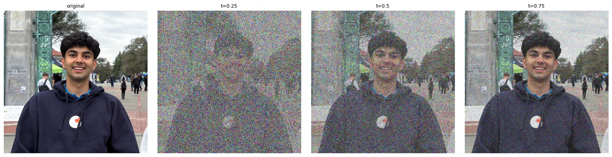
This baseline uses no learned model. The image contribution to x_t is scaled by t, so dividing
by t restores the correct amplitude and gives x₁ + ((1-t)/t)ε. That fixes the
brightness but amplifies the noise, so I apply a Gaussian blur to average it away.
I swept the blur strength over σ = 1, 2, 4, 8, 16 and picked whichever minimized mean squared error against the known clean image. That is a generous setup, since at test time you would not have the clean image to tune against. The baseline still performs worst of the three methods compared in 1.5. Blur cannot tell noise from detail, so removing one removes the other.
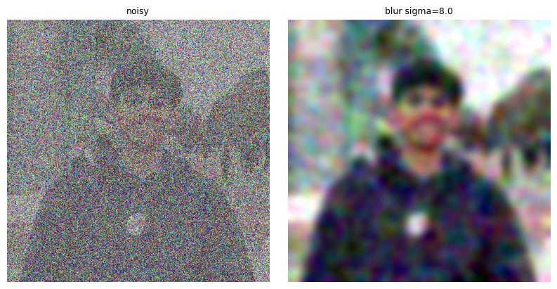
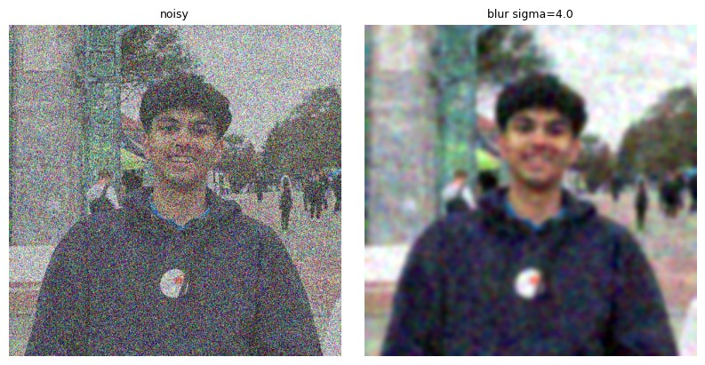
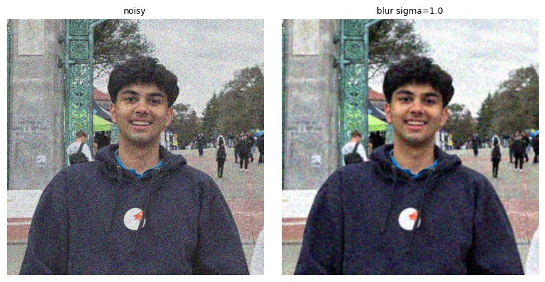
The model predicts velocity, not noise. If the path were straight and the prediction perfect, travelling the full remaining distance (1-t) along that velocity would land on the clean image.
This uses one model evaluation with the prompt "a high quality photo", and it beats the blur
baseline at every noise level. The results get smoother as t decreases. The reason is that the model
predicts the conditional mean of the velocity given x_t. At low t many clean images are
consistent with the noisy input, so the mean over all of them is a hedge. The model is not failing.
Averaging is the correct answer to an underdetermined question.
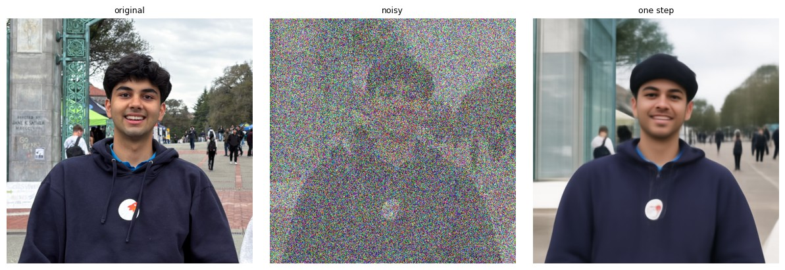
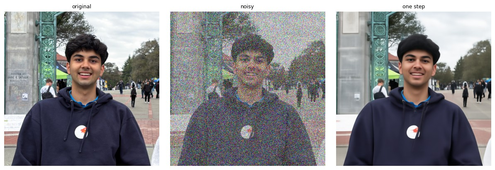
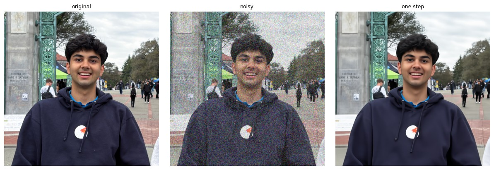
Section 1.3 added (1-t)v̂ to the noisy image. Here I visualize that update and compare it
against what should have been added. The ground truth is free. Since v_gt = x₁ - ε
is constant along the path, (1-t)v_gt = x₁ - x_t exactly, with no model evaluation needed.
The error map is the RMS difference across RGB at each pixel. I square the channel differences, average over
the three channels, then take the square root. Both updates use one shared symmetric scale with zero at
middle gray, and all three error maps use identical vmin and vmax so they are
directly comparable.
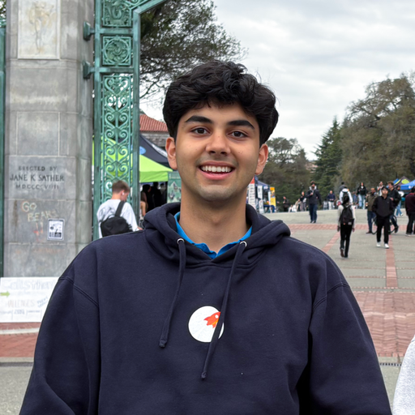
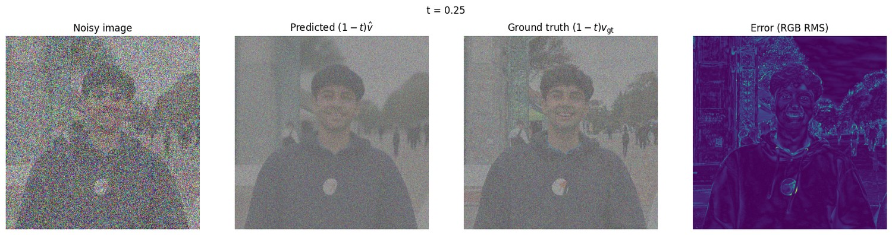
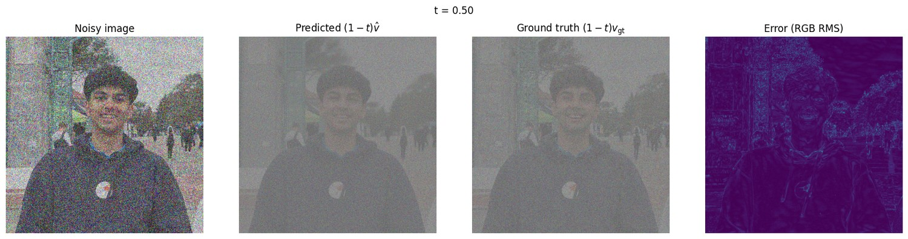
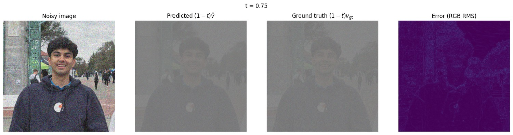
The error shrinks as t increases. By t = 0.75 the input constrains the answer tightly, so the model's guess and the truth nearly coincide. The residual error concentrates in high frequency regions like hair, foliage, and the crowd in the background, not in flat areas. Coarse structure is easy to infer from a noisy image. Exact texture is not, and that is the detail the conditional mean averages away.
Instead of one large extrapolation, I take many small steps and recompute the velocity after each one. Two details matter. The final step must be shortened so integration ends at t = 1, and the accumulated time must be clamped so it lands on 1.0 exactly rather than 0.9999.
I checked this against a constant velocity field before running the model. Starting from t = 0, 0.5 and 0.93 with h = 0.02 gives exactly 50, 25 and 4 velocity evaluations. The 0.93 case catches off by one errors, since it needs a shortened 0.01 final step after three full ones.
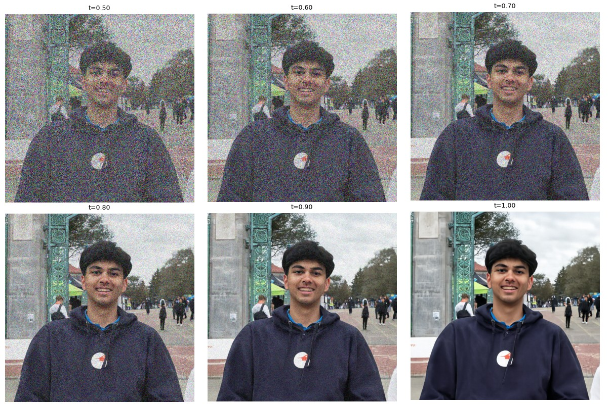
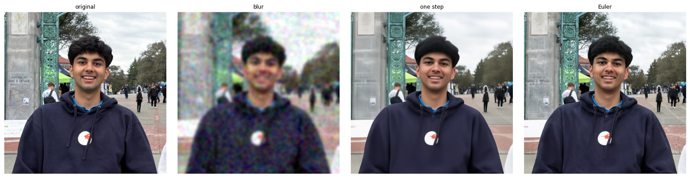
After one small step the state has moved, and the set of clean images consistent with it has shrunk. The next velocity estimate is less of an average than the last. Uncertainty collapses step by step, so the model can commit to one image instead of hedging across many. In the comparison above the Euler result carries more texture and contrast than the one-step estimate, which looks slightly waxy.
| Method | MSE vs. original |
|---|---|
| Gaussian blur | 0.0305 |
| One-step | 0.0103 |
| Euler (25 steps) | 0.0122 |
Both model-based methods beat the blur baseline by a wide margin. But one-step scores better than Euler on MSE, even though Euler looks better.
This is MSE behaving as it should. Squared error is minimized by the conditional mean, and the one-step estimate is approximately that mean. Its smoothness is what makes it numerically safe, since an averaged guess is never badly wrong anywhere. Euler instead commits to specific high frequency detail, like individual strands of hair and particular faces in the background crowd. Wherever that invented detail does not match the original pixel for pixel, MSE penalizes it. The penalty for committing and being slightly off is larger than the penalty for not committing at all.
This is why MSE is a poor perceptual metric, and why I trust the images here more than the number.
Setting t_start = 0 and passing pure Gaussian noise turns the same sampler into a generator.
There is no image to recover, so the model builds one from scratch over 50 Euler steps. All five use the
prompt "a high quality photo", with seeds 180 to 184.
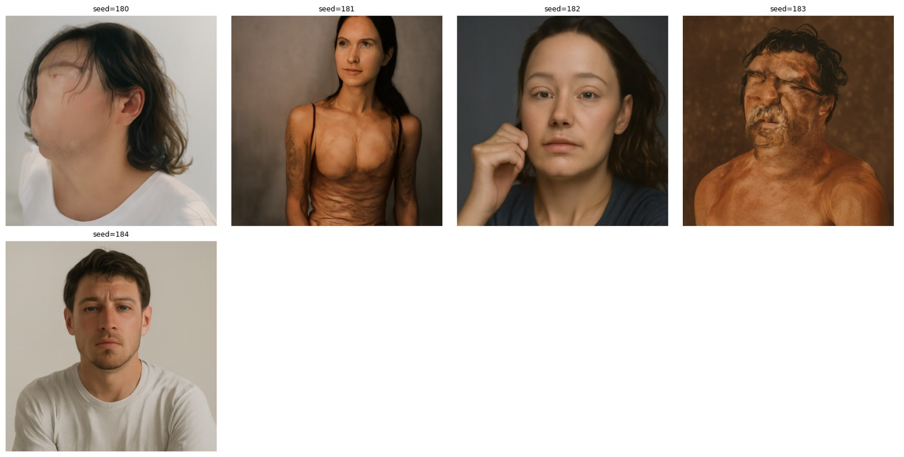
The results are poor and some are even a bit interestingly disturbing. The generic prompt strongly favors one subject: all five are portraits of people, even
though nothing in "a high quality photo" asks for that.
CFG evaluates the model twice at the same x and t, once with the real prompt and
once with the empty string, then extrapolates away from the unconditional prediction.
The difference v_c - v_u isolates the part of the velocity that comes from the prompt. Scaling
it by w and adding it back exaggerates the prompt's influence. At w = 0 this reduces to ordinary conditional
sampling, which I verified reproduces predict_velocity exactly. The cost is two model evaluations
per step instead of one, which doubles the runtime of everything in Section 3.
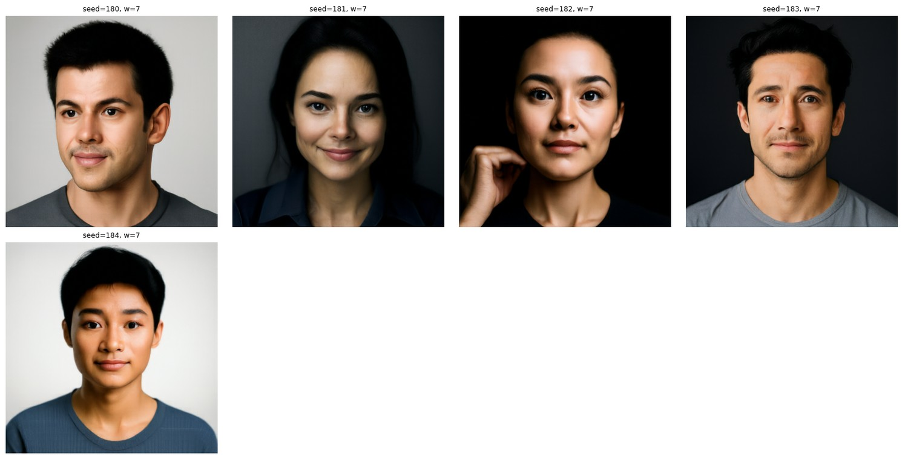
Using identical seeds makes the comparison direct, and the improvement is large. Every distorted face from 1.6 is gone. All five are clean, well formed, properly lit portraits. Seed 180 goes from a face missing an eye to a sharp frontal headshot, and seed 183 from a mangled figure to an ordinary portrait.
The tradeoff is also visible. The unguided samples varied in framing, pose and composition, badly but they varied. The guided samples collapsed onto a single template: five centered head and shoulders portraits on plain backgrounds with similar lighting. Guidance buys prompt alignment and image quality by giving up diversity, pulling every sample toward the most likely reading of the prompt.
All of Section 3 uses h = 0.02, w = 7, and the empty string for the unconditional prediction.
This is the SDEdit idea. I noise a real image only partway, to some starting time rather than all the way to 0, then integrate back to 1. To finish, the model has to invent whatever the noise destroyed, which forces the result back onto the manifold of natural images.
The starting time controls how much survives, and the direction is counterintuitive. Since t measures
cleanness, a smaller starting time means more noise was added and the edit is larger. At t = 0.02 the
original is essentially gone. At t = 0.50 the model mostly cleans up what it was given. All panels below
sweep t = 0.02, 0.04, 0.06, 0.10, 0.14, 0.25, 0.50 with the prompt "a high quality photo".
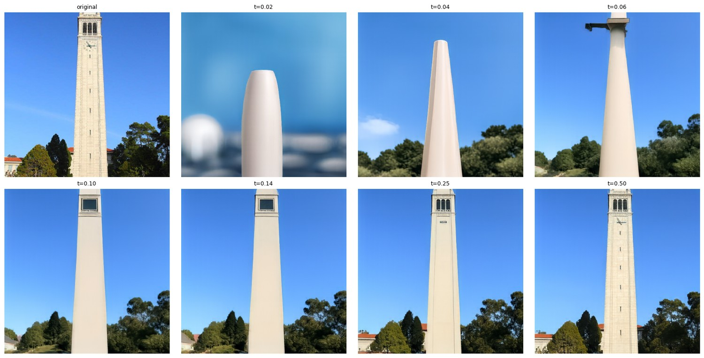
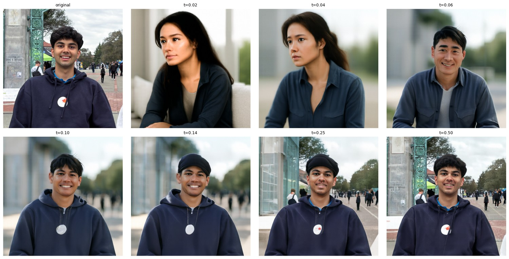
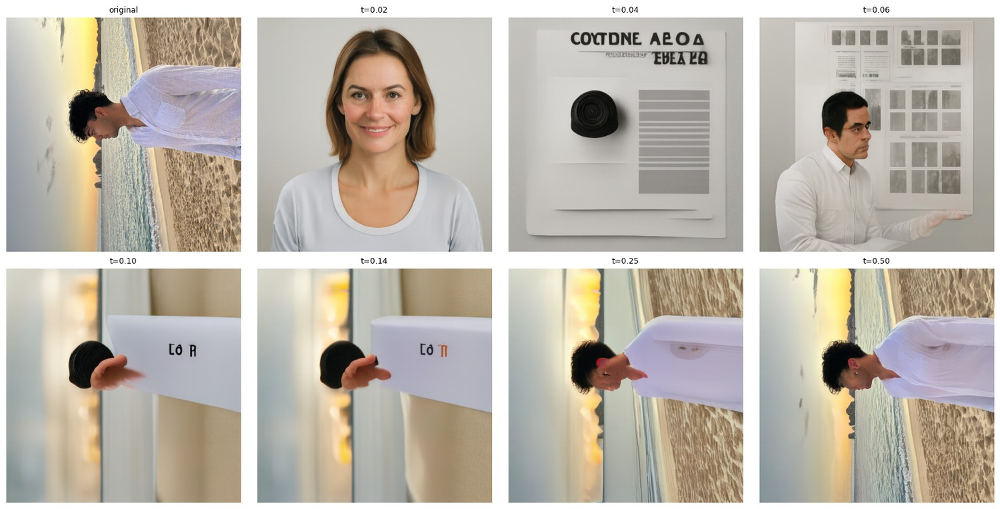
The effect is strongest on inputs that start far from the natural image manifold. A photograph is already a plausible photograph, so projecting it back changes little. A flat drawing is not, so the model has to invent a lot to make it photographic. That invention is where the interesting results come from.
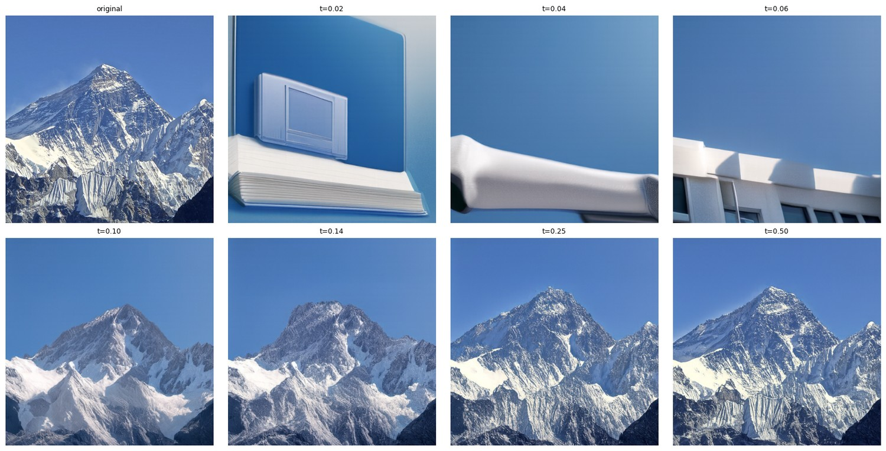
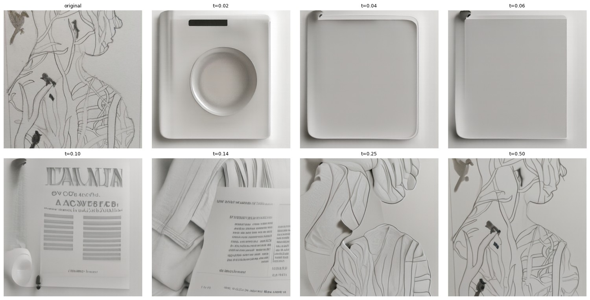
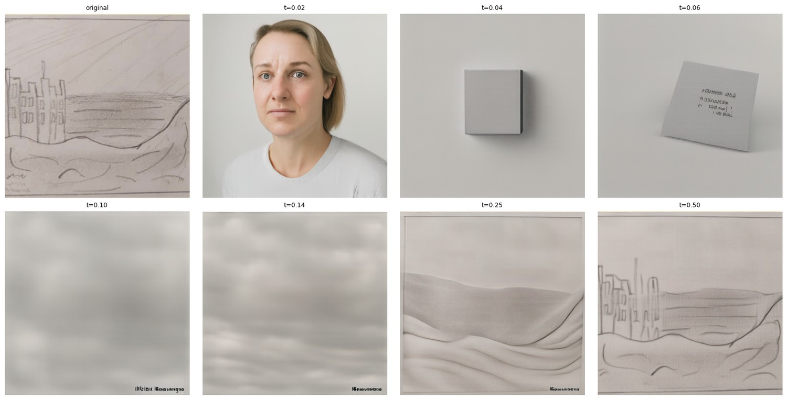
Same mechanics as 3.1, but the generic photo prompt is replaced with one describing the edit I want. Now the projection back onto the image manifold has a direction. Larger starting times preserve more of the original, smaller ones give the prompt more room to take over.
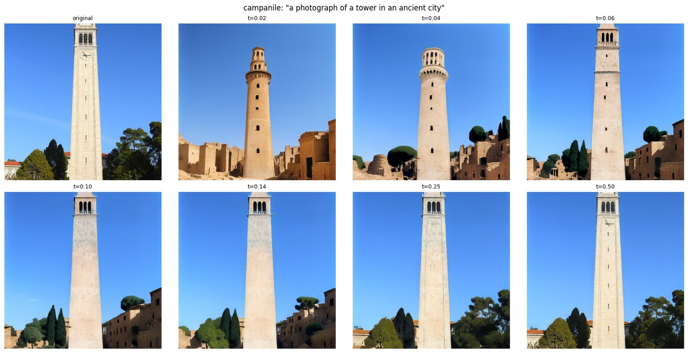
"a photograph of a tower in an ancient city"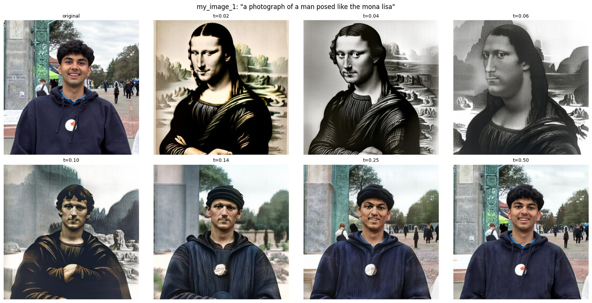
"a photograph of a man posed like the mona lisa"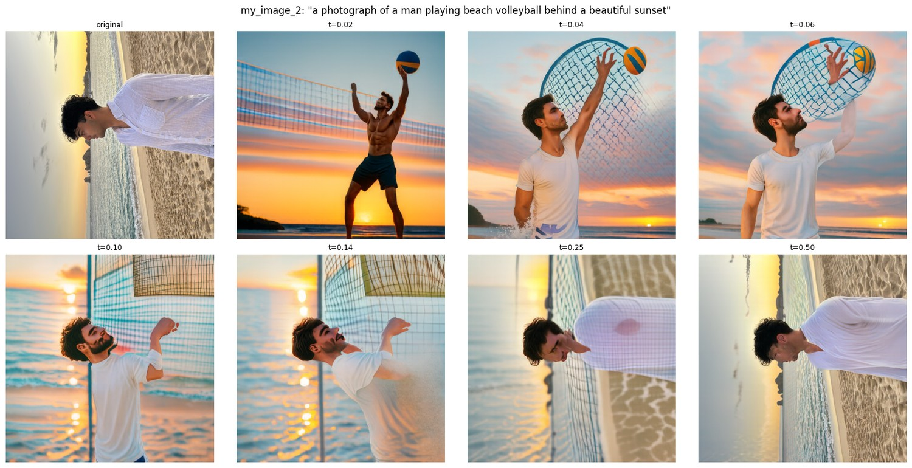
"a photograph of a man playing beach volleyball behind a beautiful sunset"The middle starting times are the interesting ones. At the extremes you get either the prompt alone or the original alone. Around t = 0.06 to 0.14 the result keeps the composition and proportions of the input while the prompt rewrites the content and surface.
An image that reads as one thing upright and something else rotated 180°. At every Euler step I compute
the guided velocity for prompt A on x, compute it for prompt B on the flipped x,
flip that second estimate back, and average the two.
Averaging means every step pushes the image toward satisfying both readings at once. This works because a 180° rotation is a pure pixel permutation and is its own inverse, so moving between the two frames costs nothing and adds no distortion.
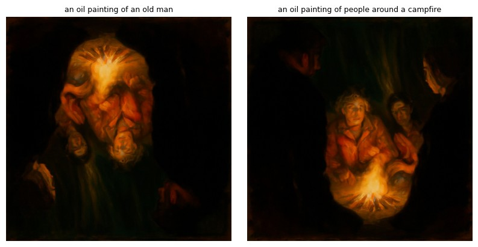
"an oil painting of an old man" / "an oil painting of people around a campfire"This one works well. The bright region across the old man's forehead and brow becomes the fire when inverted, and the dark mass of his collar and shoulders resolves into the figures seated around it. The shared warm on black palette does a lot of the work, since both prompts want a single strong light source against darkness. The two readings compete less than they otherwise would.
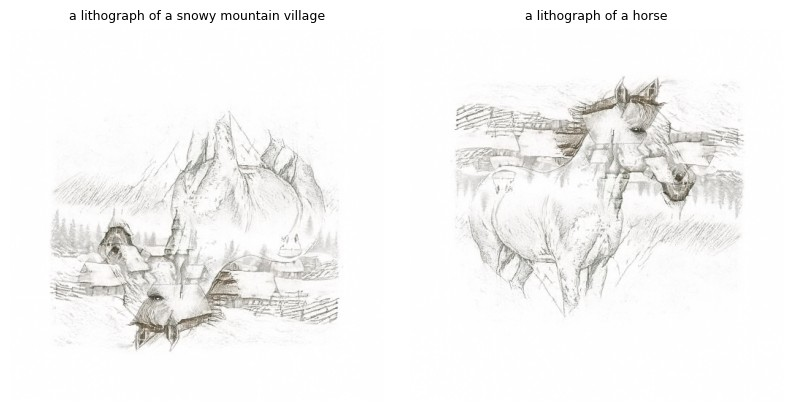
"a lithograph of a snowy mountain village" / "a lithograph of a horse"The second is weaker but still legible. The horse's head and body read clearly when rotated, and the mountain peak and village rooftops read upright. The compromise shows at the bottom edge of the upright view, where the horse's head sits as an odd dark cluster that does not resolve into village detail. When two prompts disagree about where the mass of the image should sit, something has to give.
An image that reads as one thing from across the room and another up close. Viewing distance acts as a low pass filter, so I take low frequencies from one prompt's velocity and high frequencies from the other. The high pass component is just the prediction minus its own low pass version.
The low pass is a Gaussian blur with σ = 16 and kernel size 265 at 512×512. Both predictions use
the same x and t. Unlike the anagrams, nothing is transformed here, only filtered.
"a lithograph of a waterfall""a lithograph of a skull"
"a lithograph of a forest"
"a lithograph of a cat"These are my weakest results. The close up readings are both strong. The waterfall and the bare trunked forest are convincing lithographs on their own. The distant readings are not. At 64×64 the first becomes a dark mass with a bright upper region that only loosely suggests a skull, and the second stays a stand of trees rather than resolving into a cat.
The second attempt does show the mechanism working even though the result falls short. The two round tufts of canopy at the top of the forest are the cat's ears, and the pale gap between the trunks is where the face was meant to form. The low frequency structure is in the right place, but it is not strong enough to dominate once distance removes the high frequency trees.
The project page warns that several seeds may be needed, and this is what that looks like in practice. Nothing guarantees both readings land. I am averaging two competing objectives and hoping the result satisfies both, and here the high frequency prompt won. A clean numerical run says nothing about whether a person can see both images, so these have to be judged by eye.
Part A used a frozen billion parameter model. Part B builds one from nothing: a UNet trained on MNIST, first as a single step denoiser and then as a flow matching model that generates digits from pure noise.
| Dataset | MNIST, 60,000 training images, pixels in [0, 1] |
|---|---|
| Seed | 180 |
| GPU | Tesla T4 (PyTorch 2.11.0+cu130) |
| Denoiser UNet | D = 128, 6,856,961 parameters |
| Flow UNet | D = 64 |
The convention matches Part A. Time 0 is noise, time 1 is data, and the network predicts velocity
x₁ - x₀ rather than noise. Part B uses the guidance form
v_u + γ(v_c - v_u) with γ = 5, which differs from Part A's convention.
Five simple operations, composed into three blocks. Conv keeps resolution and only changes
channels. DownConv halves it with stride 2. UpConv doubles it with a 4/2/1
transposed convolution. Flatten average pools 7×7 down to 1×1.
Unflatten reverses that with a 7/7/0 transposed convolution.
The full network, with the resolution at each stage:
(1,28,28) --ConvBlock--> (D,28,28) --Down--> (D,14,14) --Down--> (2D,7,7)
--Flatten--> (2D,1,1) --Unflatten--> (2D,7,7)
cat with (2D,7,7) -> (4D,7,7) --UpBlock--> (D,14,14)
cat with (D,14,14) -> (2D,14,14) --UpBlock--> (D,28,28)
cat with (D,28,28) -> (2D,28,28) --ConvBlock--> Conv2d --> (1,28,28)
The skip connections force the odd looking channel counts. Each concatenation doubles the input width, so
up1 is UpBlock(4D, D) and up2 is UpBlock(2D, D).
Training pairs are generated on the fly with z = x + σε. I draw the noise fresh
every step rather than once up front, so the network never sees the same (noisy, clean) pair twice even
though the clean images repeat each epoch.
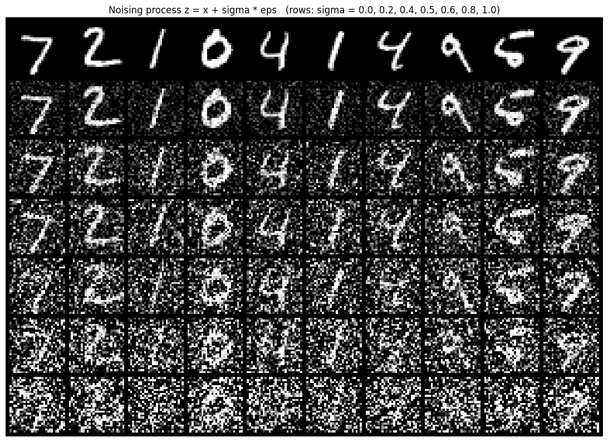
D = 128, batch size 256, Adam at 1e-4, five epochs, fixed σ = 0.5. Final training loss, averaged over the last 100 steps, was 0.00835.
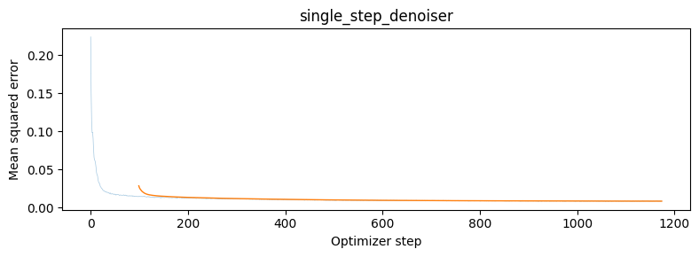
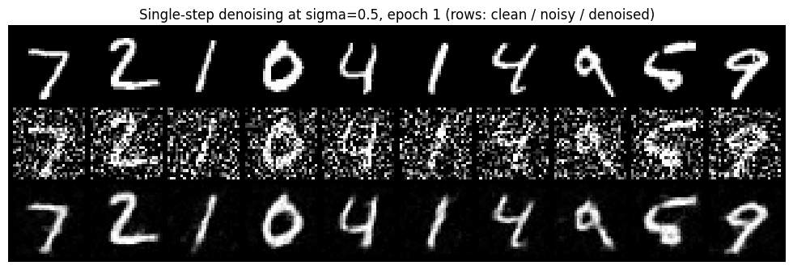
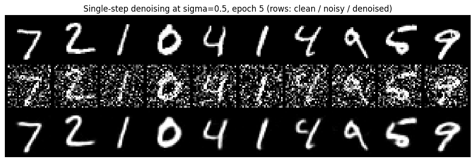
Most of the work happens in the first epoch. Epoch 5 mainly sharpens strokes and cleans up the background. The failures that remain are on genuinely ambiguous inputs. The 9 in column eight comes back looking like an a, and the oddly written 5 in column nine is rendered as a rounder blob than the original. The model reconstructs the most plausible digit given the noise, not the specific one that was there.
The denoiser only ever saw σ = 0.5. Sweeping σ on the same held out digits shows how far that generalizes.
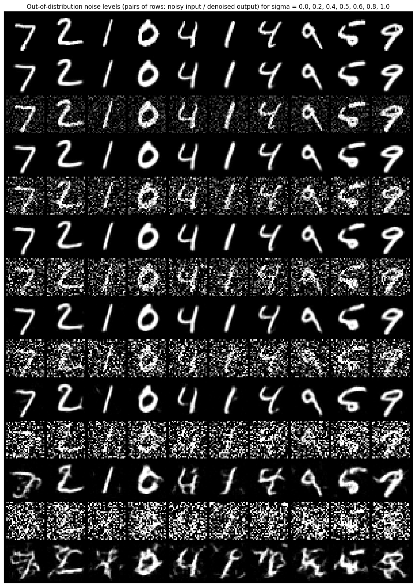
Generalization is better than I expected in one direction and sharply limited in the other. Below the training level it is essentially perfect. At σ = 0.0 the model passes a clean image through almost unchanged rather than mangling it. It also holds up at σ = 0.6, slightly past what it was trained on.
At σ = 0.8 it starts to break. Strokes thin out and several digits lose their identity. At σ = 1.0 it fails completely, producing stroke like tangles that are not digits at all. The model learned to remove a specific amount of noise. Once the input carries less signal than that assumption, it invents structure that was never there.
Same architecture and schedule, but now the input is pure Gaussian noise and the target is a clean digit. The input carries no information about the answer at all.
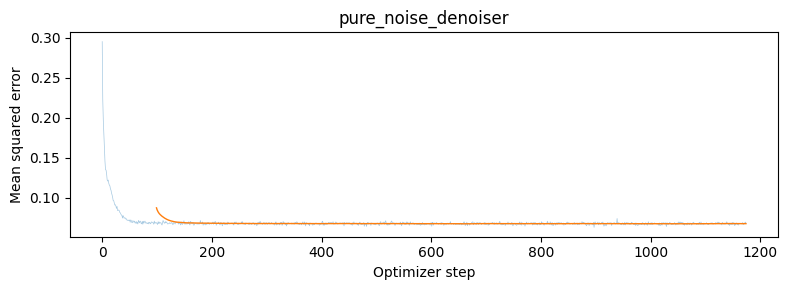
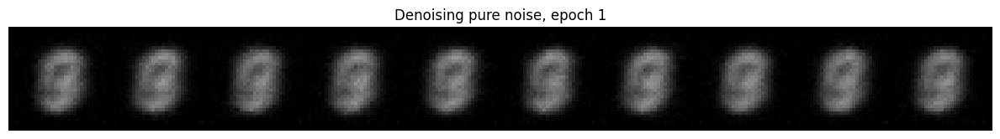
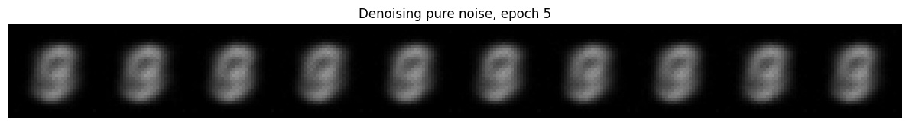
Every one of the ten outputs is essentially the same image, even though each came from an independently sampled noise tensor. It is a dim, blurry, vertically oriented grey mass, bright where digit strokes usually fall and dark around the border, with faint internal structure that looks like several digits superimposed. It is not any particular digit. Five epochs of training barely changes it, and epoch 5 is just a slightly smoother version of epoch 1.
An L2 loss is minimized by the conditional mean of the target given the input. Here the input is Gaussian noise that is independent of the digit being asked for, so there is nothing to condition on. The conditional mean collapses to the unconditional mean, which is the pixelwise average of all 60,000 training images. That average is the faint blob in the figures, the centroid of the dataset. The clearest evidence is that different noise inputs give near identical outputs: the network has learned a constant function.
This is the failure that motivates Part 2. A single step L2 denoiser produces one deterministic answer per input, so when the input is uninformative it hedges and returns the average of everything plausible. Generation needs a procedure that commits to one sample instead of averaging over all of them, which is what iterative flow matching does.
The conditioning signal enters through FCBlock, a Linear, GELU, Linear stack. Returning shape
(N, F_out, 1, 1) lets the embedding broadcast against a feature map without any reshaping at
the call site.
Two embeddings modulate the network multiplicatively. fc1_t is sized 2D and scales the
unflattened bottleneck. fc2_t is sized D and scales up1.
Training samples a random image and a random t ~ U[0,1], forms
x_t = (1-t)x₀ + t·x₁, and regresses onto the velocity
x₁ - x₀. D = 64, batch size 64, Adam at 1e-2, ten epochs, with
ExponentialLR(gamma = 0.1 ** (1/10)) stepped once per epoch.
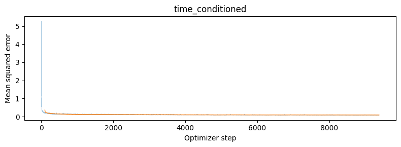
This loss curve looks much noisier than Part 1's, which is expected. Each step draws a different
t, and the difficulty of the regression varies a lot across t. The per step loss is
dominated by which timesteps landed in that batch, not by how well training is going.
Sampling is Euler integration from t = 0 to t = 1 over 50 steps, starting from pure noise. All three use the same seed, so differences come from training alone.
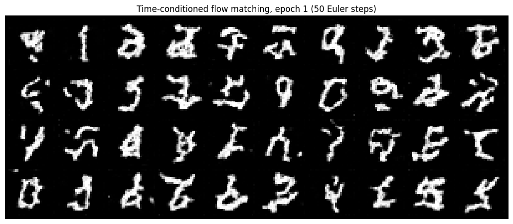
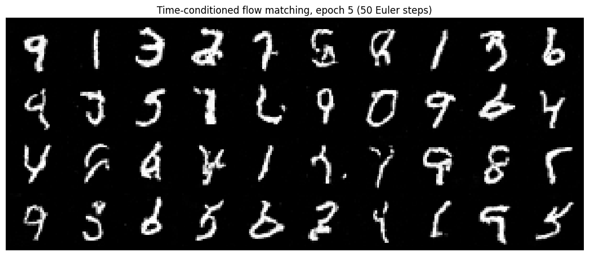
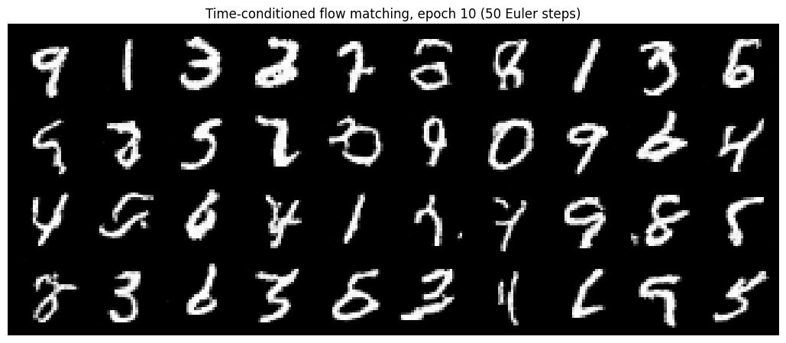
At epoch 1 the outputs are stroke like tangles with roughly the right ink density and stroke width but no digit identity. The model has learned what MNIST looks like without learning what digits are. By epoch 10 most samples are legible. I count recognizable 9s, 1s, 3s, 6s and 5s, with maybe a quarter of the grid still ambiguous or malformed.
This is the expected quality for time only conditioning. The model has to decide which digit it is drawing purely from the noise it started with, and nothing in the loss encourages it to pick one cleanly, so it often blends two.
Two more FCBlocks take a one hot class vector. The modulation changes from a pure scale to a
scale and shift, with class scaling and time shifting.
During training the class is dropped 10% of the time by zeroing the one hot vector. That is what lets the same network act as its own unconditional model at sampling time, which classifier free guidance needs.
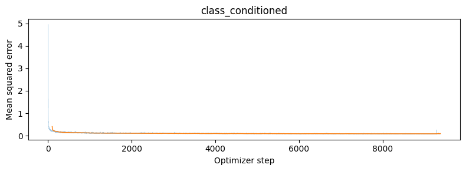
Sampling runs 300 Euler steps with γ = 5, evaluating the network twice per step, once
with the class and once with it masked out. Four instances of each digit.
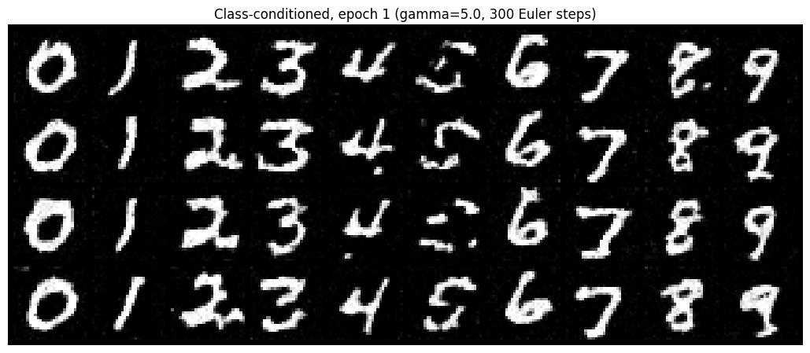
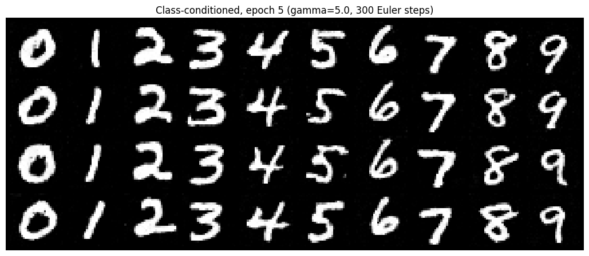
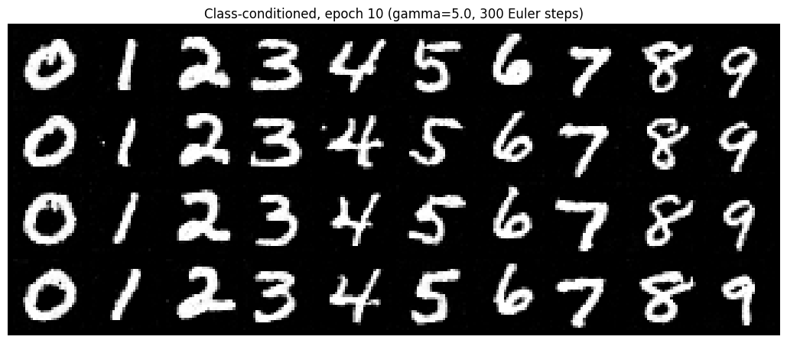
The difference against the time only model is large, and it shows up immediately. Even at epoch 1 every column is the correct digit, where the time only model at epoch 1 produced no digits at all. The remaining epoch 1 failures are almost entirely on the 5s, which break into disconnected fragments. By epoch 10 the grid is clean. All forty samples are correct and well formed, and they show real stylistic variation within each column rather than four copies of the same glyph.
Being told the class removes the hardest part of the problem. The time only model had to commit to a digit identity on its own and often blended two. Here the identity is given and the network only has to render it.
I retrained the same model with no scheduler, changing one thing: a constant learning rate of
3e-3 instead of 1e-2 with decay. I picked that as roughly the geometric mean of the
schedule's endpoints (1e-2 down to 1e-3, so 1e-2 × 0.10.5 ≈ 3.2e-3),
which is the step size the scheduled run spends most of its time near. Everything else was identical: same
architecture, batch size, epochs, dropout, guidance and seeds.
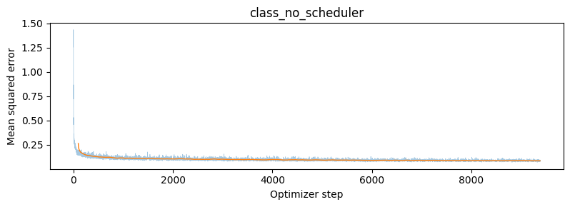
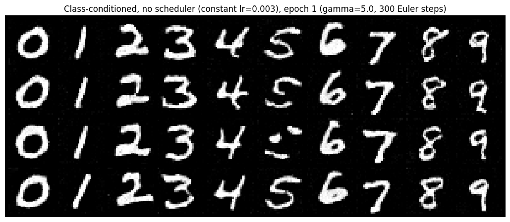
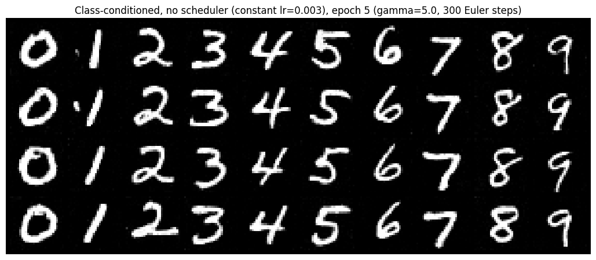
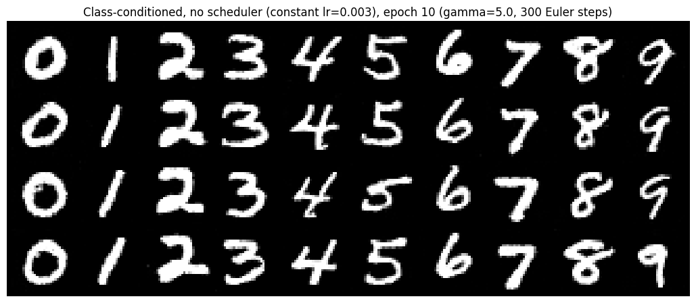
I expected the constant rate run to start slower and catch up by the end, since that is the usual reason schedules help. The opposite happened.
| Run | Final loss (last 200 steps) |
|---|---|
| With scheduler (1e-2 down to 1e-3) | 0.0892 |
| Constant 3e-3, no scheduler | 0.0848 |
The constant rate run was better at both ends. Its epoch 1 samples are visibly cleaner. Compare the 5s, which the scheduled run breaks into disconnected fragments at epoch 1 while the constant rate run renders them as complete digits. It also finished with a slightly lower loss.
The reason is that 1e-2 is too aggressive for this model, even at initialization. The scheduled run spends its early epochs at 1e-2 to 8e-3, taking steps large enough to damage what it has learned, so the decay is spent recovering rather than refining a good solution. A constant 3e-3 sits in a stable regime the whole way through and never needs to recover.
So the answer to whether we can drop the scheduler is yes, and here it was not even a tradeoff. The schedule's real job in the provided recipe is to make an over large initial learning rate survivable. Pick a sensible constant and the schedule has nothing left to fix. The cost is that the constant has to be tuned by hand, while a decaying schedule is more forgiving of a bad initial guess. That is probably why it is the default recommendation.